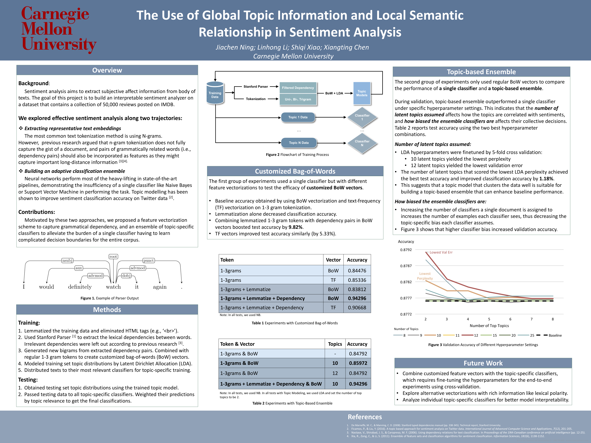
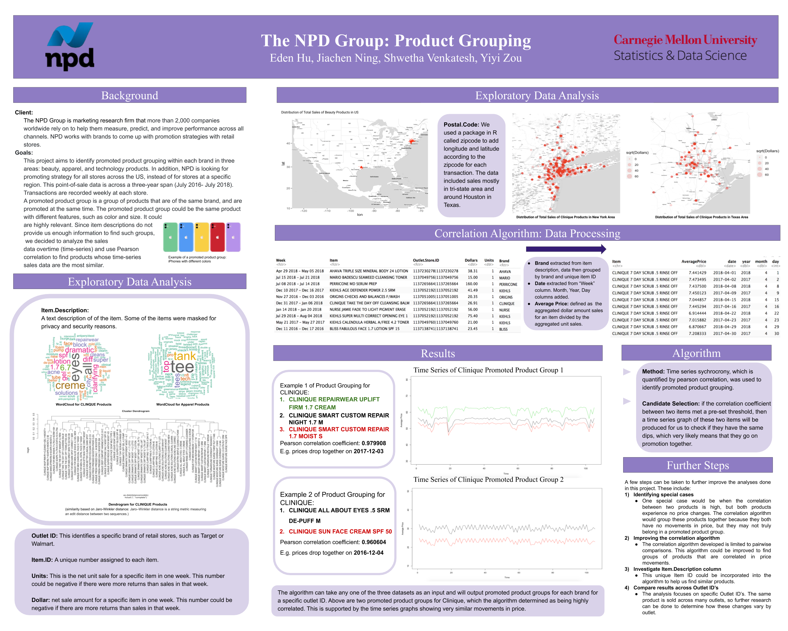
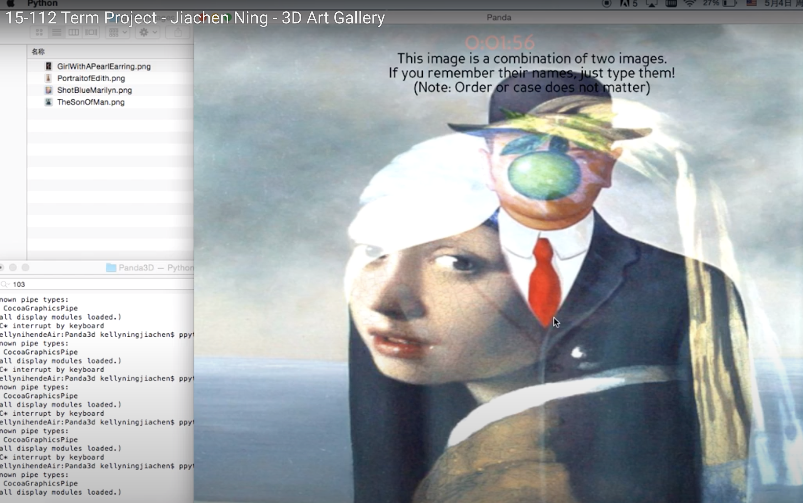

The Use of Global Topic and Local Semantic Relationship in sentiment analysis
(Click to see the poster in detail)
Sentiment analysis aims to extract subjective affect information from body of texts. The goal of this project is to build an interpretable sentiment analyzer on a dataset that contains a collection of 50,000 reviews posted on IMDB.
This project proposed a feature vectorization scheme to capture grammatical dependency, and an ensemble of topic-specific classifiers to alleviate the burden of a single classifier having to learn complicated decision boundaries for the entire corpus.
The NPD Group: Product Grouping
(Click to see the poster in detail)
This project aimed to identify promoted product grouping within each brand in three areas: beauty, apparel, and technology products. In addition, NPD is looking for promoting strategy for all stores across the US, instead of for stores at a specific region. This point-of-sale data is across a three-year span (July 2016- July 2018). Transactions are recorded weekly at each store. A promoted product group is a group of products that are of the same brand, and are promoted at the same time. The promoted product group could be the same product with different features, such as color and size. It could also be different products that are highly relevant. Since item descriptions do not provide us enough information to find such groups, we decided to analyze the sales data overtime (time-series) and use Pearson correlation to find products whose time-series sales data are the most similar.

(Click to see the poster in detail)
Microcirculatory monitoring plays a pivotal role in diagnosing of vascular conditions and in monitoring critically ill patients for cardio-respiratory insufficiency.
This project constructed a 3D micro-vascular structure based on Sidestream Dark Field (SDF) videos. Give more accurate blood flow velocity estimation. Allow doctors to visualize the relative depths of microvasculature. Trace a single blood cell cluster and display it along with 3D vessel skeletons.Provide doctors with more visual information on blood flow motion.
3D Art Gallery